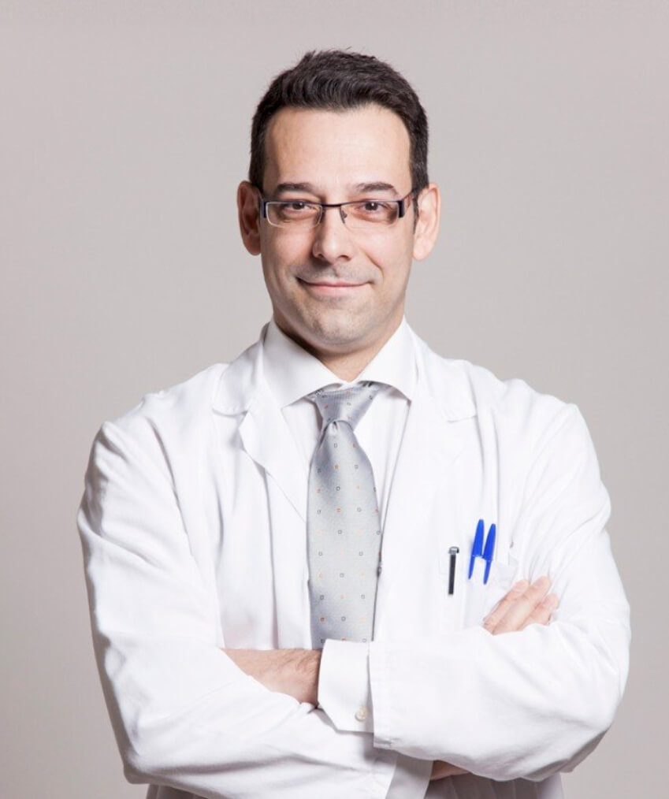

Nosotros
El concepto Neulift Clinic nace ante la inquietud de cirujanos plásticos que buscan ofrecer a sus pacientes una alternativa en tratamientos estéticos no quirúrgicos

Cirujanos certificados
El objetivo de Neulift Clinic es otorgar un servicio estético integral y con ello conseguir una mejora emocional.
Nuestro equipo
El equipo de cirujanos plásticos está conformado por el Dr. Marcos Gerardo González Martínez y el Dr. Paulo César González Martínez.

Dr. Marcos Gerardo González
- Cirujano plástico estético y reconstructivo que ejerce su práctica médica en la Ciudad de México.
- Cédula de especialidad: 5823450.
- Avalado por el Consejo Mexicano deCirugía plástica estética y reconstructiva (CMCPER) No. 1417.
- Miembro activo de la Asociación Mexicana de Cirugía plástica y estética y reconstructiva (AMCPER).
- Miembro activo del American College of Plastic Surgeons (ASPS)
- Miembro activo del International Society of Aesthetic Plastic Surgery (ISAPS).
- Colegio del Valle de México.
- Autor de diversos artículos nacionales e internacionales y autor de capítulos de libros en Cirugía plástica y reconstructiva.
- Forma parte del cuerpo médico del Centro Médico ABC.
Dr. Marcos Gerardo González
- Cirujano plástico estético y reconstructivo que ejerce su práctica médica en la Ciudad de México.
- Cédula de especialidad: 5823450.
- Avalado por el Consejo Mexicano deCirugía plástica estética y reconstructiva (CMCPER) No. 1417.
- Miembro activo de la Asociación Mexicana de Cirugía plástica y estética y reconstructiva (AMCPER).
- Miembro activo del American College of Plastic Surgeons (ASPS)
- Miembro activo del International Society of Aesthetic Plastic Surgery (ISAPS).
- Colegio del Valle de México.
- Autor de diversos artículos nacionales e internacionales y autor de capítulos de libros en Cirugía plástica y reconstructiva.
- Forma parte del cuerpo médico del Centro Médico ABC.